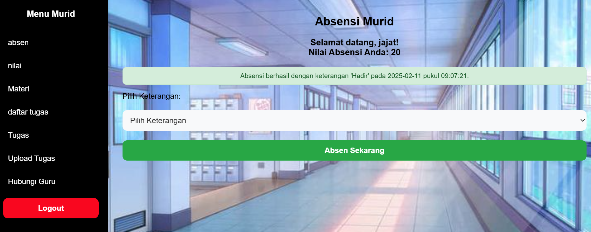

Social Media App (Majestik)
- Posting teks, foto, dan video
- Like, komentar
- Notifikasi
- followers dan following
- search user
- tema gelap/terang

Social Media App V2
- Posting teks, foto, dan video
- like,komentar postingan
- pertemanan konfirmasi tambah teman hapus teman
- chat antar user
- search user
- Notifikasi

Grosir
- Sistem Login
- Keranjang Belanja
- Metode Pembayaran
- Riwayat Transaksi
- Fitur Chat

Sistem Absensi
- Murid dapat melakukan absensi secara mandiri
- Murid dapat mengunggah tugas langsung ke sistem
- Murid bisa menghubungi guru pengampu
- Guru dapat melihat daftar siswa yang sudah absen dan mengumpulkan tugas
- Guru bisa melihat statistik jumlah murid yang sudah absen
- Guru dapat mengekspor laporan absensi ke format PDF

keuangan
- Sistem Login
- Ringkasan saldo, pemasukan, dan pengeluaran secara real-time
- Riwayat transaksi yang dapat diakses kapan saja
- Pencatatan pemasukan dan pengeluaran dengan kategori yang jelas
- Keamanan data dengan sistem login dan enkripsi
warung bu alex
- Sistem Login
- Menu Kategori
- Pemesanan Online
- Sistem Transaksi
- Detail Menu

Kasir